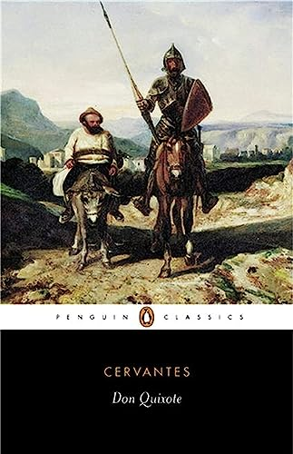

Harper Lee, believed to be one of the most influential authors to have ever existed, famously published only a single novel (up until its controversial sequel was published in 2015 just before her death). Lee’s To Kill a Mockingbird was published in 1960 and became an immediate classic of literature. The novel examines racism in the American South through the innocent wide eyes of a clever young girl named Jean Louise (“Scout”) Finch. Its iconic characters, most notably the sympathetic and just lawyer and father Atticus Finch, served as role models and changed perspectives in the United States at a time when tensions regarding race were high.

Miguel de Cervantes’s Don Quixote, perhaps the most influential and well-known work of Spanish literature, was first published in full in 1615. The novel, which is very regularly regarded as one of the best literary works of all time, tells the story of a man who takes the name “Don Quixote de la Mancha” and sets off in a fit of obsession over romantic novels about chivalry to revive the custom and become a hero himself. The character of Don Quixote has become an idol and somewhat of an archetypal character, influencing many major works of art, music, and literature since the novel’s publication. The text has been so influential that a word, quixotic, based on the Don Quixote character, was created to describe someone who is, “foolishly impractical especially in the pursuit of ideals; especially: marked by rash lofty romantic ideas or extravagantly chivalrous action.”